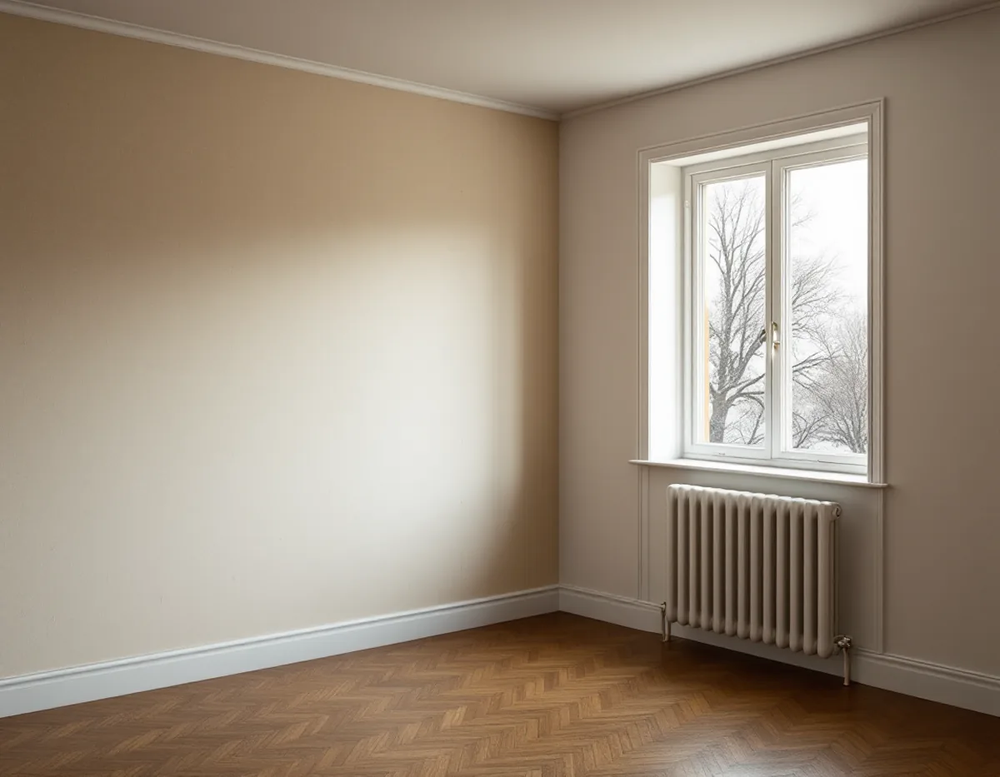

Byggår och prov
Du berättar när huset byggdes, och vi provar om väggen kritar eller släpper.
Hur en vägg ska förberedas för ny tapet beror mycket på när huset byggdes. En lägenhet i Råsunda kan ha ett helt annat underlag än en lägenhet i ett hus från 1950-talet i Huvudsta, även om väggarna ser likadana ut när de är målade. Geal Entreprenad AB tapetserar i lägenheter, radhus och villor i Solna och börjar med att ta reda på vad väggen består av.

Solna stad räknar upp drygt 30 sammanhängande kulturhistoriskt värdefulla miljöer. Bland dem finns stenstaden och villastaden i Råsunda, villabebyggelsen i norra Råsunda och 1950-talsbebyggelse i Råsunda, Skytteholm och Huvudsta. Staden har också en karta över kulturhistoriskt klassade byggnader.
För den som ska tapetsera spelar årtalet roll av ett enkelt skäl: väggarna förbehandlades på olika sätt under olika perioder, och det som sitter under färgen eller den gamla tapeten bestämmer hur den nya fäster. Därför frågar vi efter byggåret och provar sedan väggen.
Även den gamla tapeten kan berätta något. Riksantikvarieämbetet skriver att limfärg användes som tryckfärg på tapeter ända in på 1950-talet, och limfärg är känslig mot fukt. Kulturen i Lund beskriver 1950-talets tapeter med neutrala bottenfärger, linjära mönster och färgaccenter, och fondtapeter med djärvare mönster. Sitter en sådan tapet kvar i en lägenhet från den tiden är den värd att titta på innan den rivs.
Svenska Byggnadsvårdsföreningen skriver att dålig vidhäftning kan befaras i hus från 1920–1950-talen, då väggarna underbehandlades med lim och krita, så kallad kridering. Vid mitten av 1950-talet började sandspackel användas som underlag. Riksantikvarieämbetet beskriver samma sak från andra hållet: förr, innan sandspacklet kom, var limfärg ett vanligt utjämnande lager på puts under tapeterna.
I praktiken betyder det att en vägg i ett hus från 1930-talet kan behöva tas ner till fast underlag eller bindas innan ny tapet kommer upp, medan en sandspacklad vägg från slutet av 1950-talet oftare bara behöver lagas, slipas och grundas. Limfärg är dessutom känslig för fukt, och ett blött klister kan få den att släppa.
Kulturen i Lund skriver att den första vinyltapeten tillverkades i Sverige 1959 men slog igenom på allvar först på 1970-talet. Ytan av pvc-plast gjorde tapeten lättskött och hållbar. Byggnadsvårdsföreningen beskriver non-woventapeter som plastbehandlade och täta, och nämner papperstapet som sätts upp med stärkelseklister som ett alternativ för den som vill undvika latexgrund.
Vilken tapet som passar beror på rummet och huset. I ett hus som värms upp året runt är ett tätt ytskikt på insidan inget problem enligt föreningen. Vi går igenom alternativen med dig innan du väljer mönster.
Är det väggarna utanpå huset som ska ses över, eller fönster och snickerier som ska målas, finns det mer under målare i Solna.
Enligt bostadsrättslagen 7 kap. 12 § ska den som har bostadsrätten på egen bekostnad hålla lägenheten i gott skick, om stadgarna inte säger något annat. En ny tapet är inte någon av de åtgärder som 7 § räknar upp som tillståndspliktiga, som ingrepp i bärande konstruktion eller ändrade ledningar för vatten och avlopp.
Tapet hör inte hemma där luftfuktigheten blir hög, skriver Byggnadsvårdsföreningen, och den kan bli det i kök och badrum. Skatteverket nämner för övrigt att byta våtrumstapet mot kakel som ett förbättringsarbete som ger rotavdrag.
Ofta görs tapetseringen samtidigt som annat måleri i lägenheten. I en bostadsrätt räknar Skatteverket även målning av tak, väggar och element, innerdörrar och insidan av ytterdörrar och fönster som rotarbete, men inte målning av fönstrens eller ytterdörrarnas utsida, balkonger eller fasader.
Du berättar när huset byggdes, och vi provar om väggen kritar eller släpper.
Papper, vinyl eller non-woven väljs efter rummet och underlaget.
Golv, element och fönsterbänkar täcks, och arbetet läggs på tider som passar föreningens regler.
Underarbete och uppsättning redovisas var för sig.
Gamla lager tas ner där det behövs, väggen spacklas, slipas och grundas.
Tapeten sätts upp med det klister som hör till tapettypen.
Skatteverket räknar tapetsering som rotarbete, både i en villa och i en bostadsrätt. I bostadsrätten gäller det arbete inne i lägenheten, innanför tak, väggar och golv.
Avdraget är 30 procent av arbetskostnaden, högst 50 000 kr per person och år och högst 75 000 kr tillsammans med rutavdrag. Material som tapet och klister ger inget avdrag, och inte heller resor. Geal drar av rotavdraget direkt på fakturan.
Hur mycket av det gamla som ska ner, vilket underlag väggen behöver och vilken tapettyp du väljer påverkar mest. Efter det kostnadsfria platsbesöket får du ett skriftligt kostnadsförslag.
Fasad, fönster och invändig målning.
Målare i Stockholm →Takbyte, takbesiktning och plåtarbeten.
Takläggare i Solna →Råsunda, Stocksundstorp och Råsta.
Takrenovering i Solna →Ritningar, kontrollplan och slutbesked.
Byggföretag i Solna →Putsade villor och krav på material.
Fasadrenovering i Solna →Fönster från 1950-talet, kitt och fogar.
Fönsterrenovering i Solna →Ta fram och slipa trägolvet under mattan.
Golvslipning i Solna →Plåt i Solnas kulturmiljöer.
Plåtslagare i Solna →Bostadsrätt, stambyte och villor.
Badrumsrenovering i Solna →Bostadsrätter i Råsunda, Hagalund och Huvudsta.
Golvläggare i Solna →Bostadsrätter, fläktar och Råsundas villor.
Köksrenovering i Solna →Villor, radhus och lägenheter i Solna.
Målare i Solna →Väggar, dörrar, balkong och radhus.
Snickare i Solna →Hela lägenheten, elen inräknad.
Totalrenovering i Solna →